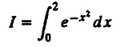
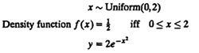
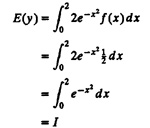
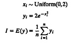

24.5.1 Monte Carlo Simulation
A static simulation or one without a time axis is called a Monte Carlo simulation. Such simulations are used to model probabilistic phenomenon that do not change characteristics with time. Like a dynamic simulation they require the generation of pseudo-random numbers. Monte Carlo simulations are also used for evaluating nonprobabilistic expressions using probabilistic methods. The following example illustrates one such application.
Example 24.1 The following integral is to be evaluated:

One way to evaluate this integral is to generate uniformly distributed random numbers x and for each number compute a function y as follows:

The expected value of y is

Thus, the integral can be evaluated by generating uniformly distributed random numbers xi, computing yi, and then averaging as follows:

24.5.2 Trace-Driven Simulation
A simulation using a trace as its input is a trace-driven simulation. A trace is a time-ordered record of events on a real system. Trace-driven simulations are quite common in computer system analyses. They are generally used in analyzing or tuning resource management algorithms. Paging algorithms, cache analysis, CPU scheduling algorithms, deadlock prevention algorithms, and algorithms for dynamic allocation of storage are examples of cases where trace-driven simulation has been successfully used and documented in the literature. In these studies, a trace of the resource demand is used as input to the simulation, which models different algorithms. For example, in order to compare different memory management schemes, a trace of page reference patterns of key programs can be obtained on a system. This trace can then be used to find the optimal set of parameters for a given memory management algorithm or to compare different algorithms.
It should be noted that the traces should be independent of the system under study. For example, a trace of pages fetched from a disk depends upon the working set size and page replacement policy used. This trace could not be used to study other page replacement policies. For that, one would need a trace of pages referenced. Similarly, an instruction trace obtained on one operating system should not be used to analyze another operating system.
Sherman and Brown (1973) point out the following advantages of trace-driven simulations:
- 1. Credibility: The results of a trace-driven simulation are easy to sell to other members of the design team. A trace of page references, for example, has more credibility than references generated randomly using an assumed distribution.
- 2. Easy Validation: The first step in a trace-driven simulation is to monitor a real system to get the trace. During this monitoring, one can also measure performance characteristics of the system. By comparing the measured performance with that obtained by simulation, one can easily validate a trace-driven model.
- 3. Accurate Workload: A trace preserves the correlation and interference effects in the workload. No simplification, such as those needed in getting an analytical model of the workload, is required.
- 4. Detailed Trade-offs: Due to the high level of detail in the workload, it is possible to study the effect of small changes in the model or algorithms.
- 5. Less Randomness: A trace is a deterministic input. If the simulation is repeated again, the input trace is still the same but the output may be different due to randomness in other parts of the model. Overall, output of a trace-driven model has less variance, which means that a fewer number of repetitions are required to get a desired statistical confidence in the result. Also, if other parts of the system are not random, it is possible to get absolute results in one execution of the model.
- 6. Fair Comparison: A trace allows different alternatives to be compared under the same input stream. This is a fairer comparison than other simulation models in which input is generated from a random stream and is different for the various alternatives being simulated.
- 7. Similarity to the Actual Implementation: A trace-driven model is generally very similar to the system being modeled. Thus, when implementing it, one can get a very good feeling for the complexity of implementing a proposed algorithm.
The disadvantages of trace-driven simulations are as follows:
- 1. Complexity: A trace-driven model requires a more detailed simulation of the system. Sometimes, the complexity of the model overshadows the algorithm being modeled.
- 2. Representativeness: Traces taken on one system may not be representative of the workload on another system. Even on a single system workload may change with time, and thus traces become obsolete faster than other forms of workload models that can be adjusted with time.
- 3. Finiteness: A trace is a long sequence. A detailed trace of a few minutes of activity on a system may be enough to fill a disk pack. A result based on those few minutes may not be applicable to the activities during the rest of the day.
- 4. Single Point of Validation: While using traces for validation, one should be careful since the traces give only one point of validation each. An algorithm that is the best for one trace may not be the best for another. One should use a few different traces to validate the results.
- 5. Detail: The main problem with trace-driven simulation is the high level of detail. Traces are generally very long sequences that have to be read in from a disk and then computation has to be done for each element of the trace.
- 6. Trade-off: With traces, it is difficult to change workload characteristics. It is not possible to change a trace itself. In order to make conclusions about the impact of changes in workload, a trace for the changed workload is required. Similarly, if a trace contains resource demand characteristics of several jobs, it is difficult to study the effects on individual jobs.
24.5.3 Discrete-Event Simulations
A simulation using a discrete-state model of the system is called a discrete event simulation. This is opposite of continuous-event simulations in which the state of the system takes continuous values. The continuous-state models are used in chemical simulations where the state of the system is described by the concentration of a chemical substance. In computer systems, discrete-event models are used since the state of the system is described by the number of jobs at various devices. Notice that the term “discrete” does not apply to the time values used in the simulation. A discrete-event simulation may use discrete- or continuous-time values.